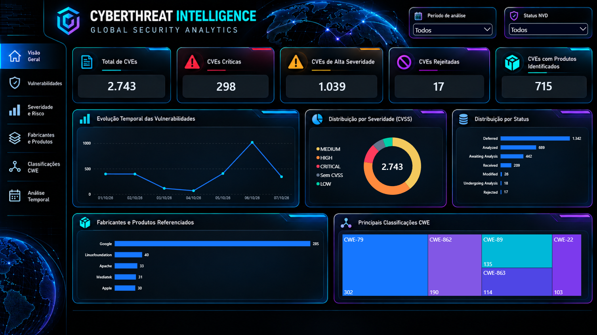
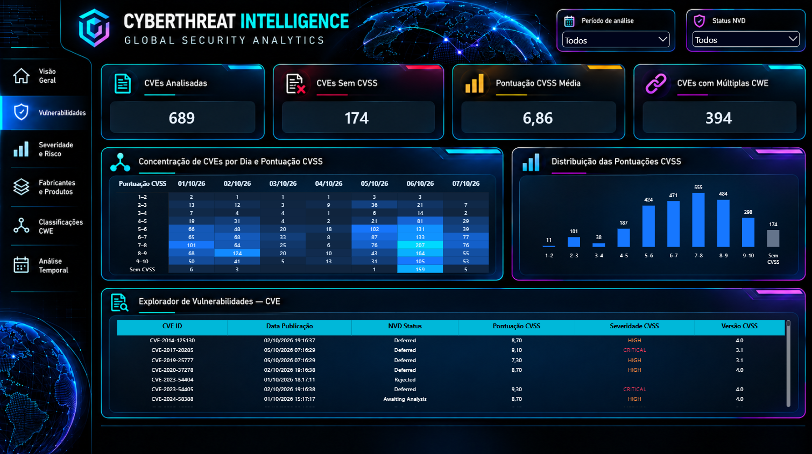
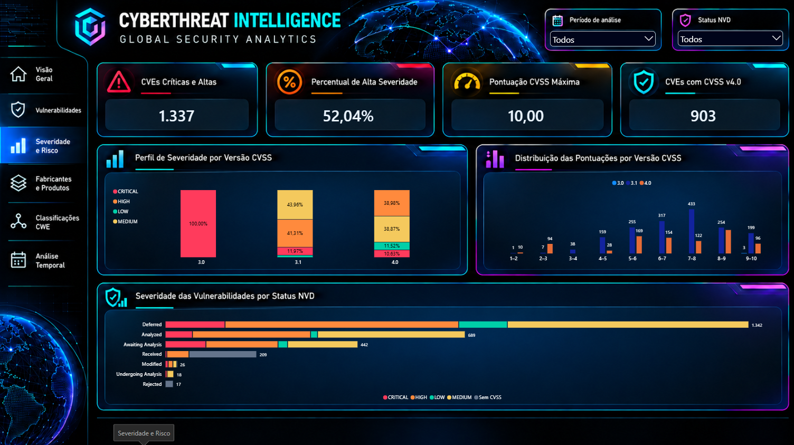
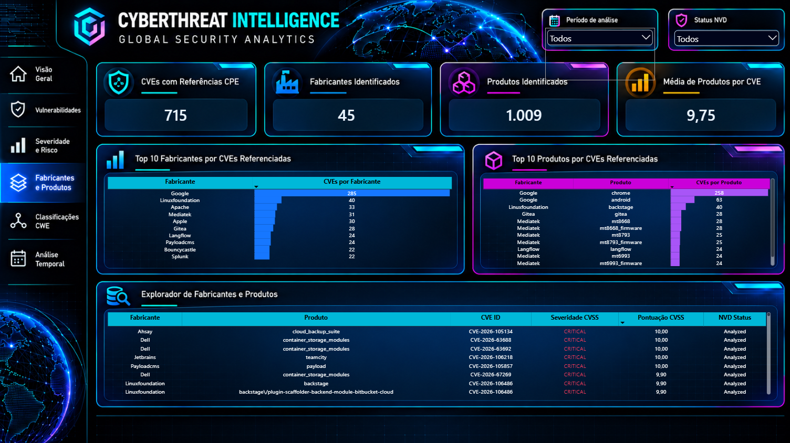
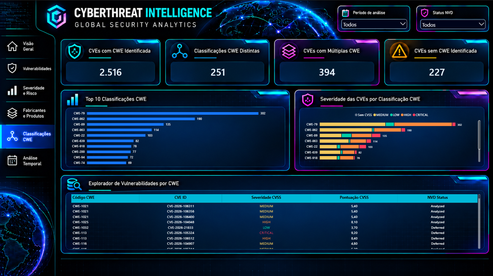
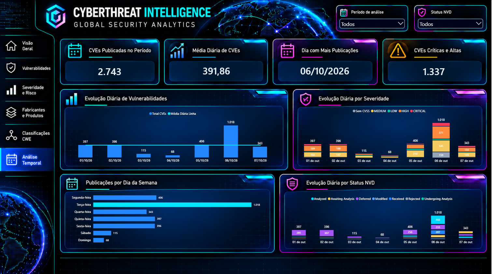

Objetivo da análise
Desenvolver uma solução analítica capaz de organizar dados públicos de vulnerabilidades, permitindo acompanhar sua distribuição por severidade, status de análise, classificações CWE, fabricantes, produtos e período de publicação.
Projeto de análise de dados voltado à investigação de vulnerabilidades de cibersegurança, desenvolvido com Python e Power BI a partir de informações públicas da National Vulnerability Database (NVD), mantida pelo NIST.
A proposta é transformar registros técnicos de vulnerabilidades em indicadores e visualizações que facilitem a compreensão dos níveis de severidade, das classificações de fraquezas, dos fabricantes e produtos referenciados e da evolução temporal das publicações.
Um fluxo estruturado de extração, tratamento, validação e visualização de informações públicas sobre vulnerabilidades de segurança.
Desenvolver uma solução analítica capaz de organizar dados públicos de vulnerabilidades, permitindo acompanhar sua distribuição por severidade, status de análise, classificações CWE, fabricantes, produtos e período de publicação.
Extração programática de registros CVE por meio da API 2.0 da NIST NVD, utilizando Python. A coleta contempla identificadores, datas, status, métricas CVSS, classificações CWE e referências a produtos quando disponíveis.
Organização dos dados em etapas de processamento, com verificações de integridade, duplicidade, consistência temporal e disponibilidade dos campos. As estruturas aninhadas da API são transformadas em informações adequadas à análise.
Desenvolvimento de seis páginas no Power BI, reunindo indicadores, gráficos comparativos, análises temporais e tabelas exploratórias. Os filtros permitem investigar diferentes recortes do conjunto de vulnerabilidades.
O recorte apresentado no dashboard compreende as vulnerabilidades publicadas entre 1º e 7 de outubro de 2026.
Os indicadores representam o recorte e as regras de classificação utilizados no dashboard. A disponibilidade de pontuações CVSS, classificações CWE e referências a produtos varia entre os registros da NVD. A quantidade de CVEs não corresponde ao número de ataques ou incidentes efetivamente ocorridos.
O projeto utiliza registros públicos da NIST NVD para análise de vulnerabilidades. As informações sobre CVEs, severidade e produtos não devem ser interpretadas como evidência de exploração efetiva ou ocorrência de incidentes.
Seis páginas analíticas desenvolvidas para explorar vulnerabilidades, severidade, fabricantes, produtos, classificações CWE e tendências temporais.






Clique em qualquer imagem para visualizar o dashboard em tamanho maior. As imagens representam páginas do relatório desenvolvido no Power BI.
← Ver outros projetos